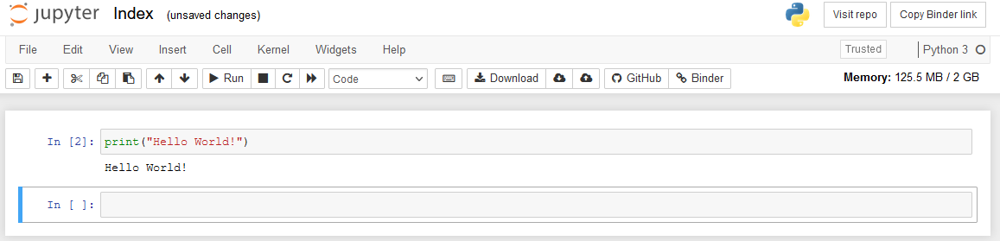
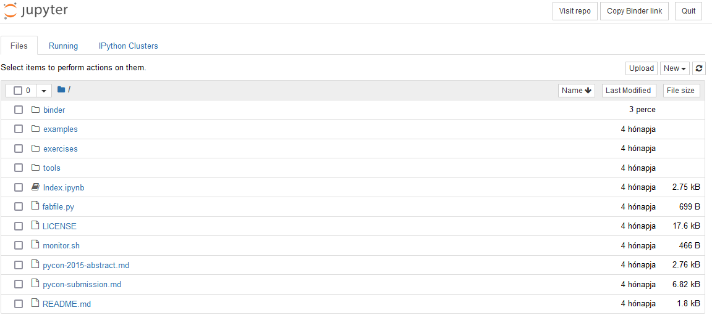

Jupyter online
Számos fejlesztőkörnyezet és -eszköz érhető el a Python nyelven történő programozáshoz. A választás többnyire preferencia kérdése. A desktop megoldások konfigurációja és kezelése azonban nem triviális, és egy a programozást éppen megismerő személy számára elrettentő és nehezen átlátható lehet. Ezért az alapok elsajátításához érdemes valamilyen online interpretert használni.
Az egyik legelterjedtebb Python környezet a Jupyter Notebook. Az online változatának előnyei közé tartozik, hogy regisztráció nélkül is enged fájlokat kezelni. A kurzus során használható az online és a desktop változat is, de a példákban az online változat funkcióit emlegetjük majd, de minden megtalálható a desktop változatban is.
A Jupyter .ipynb kiterjesztésű állományokkal dolgozik, és különlegessége, hogy ezekben egymás mellett képes formázott szöveges elemeket (Markdown) és futtatható Python kódrészleteket kezelni. Mi alapvetően csak kódok futtatására fogjuk használni, de a jellegéből adódóan kiválóan alkalmas jegyzetelésre.
A Jupyter Notebook elindítását követően a kezdőoldal négy Markdown nyelven írodott szöveges elemből áll, úgynevezett cellákból áll. Ezek a jobb felső sarokban levő gombokkal tetszőlegesen módosíthatók.
A középső legördülő menüben a Markdown feliratot Code-ra váltva a cella Python kód futtatására alkalmassá változik. Első indításkor érdemes kivágni a felesleges szöveges elemeket és egy új, üres kód cellával indulni. Egy "Hello World!" szöveget megjelenítő példakód megvalósítása így néz ki:  A példában megírtuk a kódunkat és a Run gombra kattintva futtattuk. Ekkor az alatta levő sortól kezdődően megjelent a program kimenete, valamint nyílt egy új cella, ahová a következő kódrészletünket írhatjuk.
Online fájlkezelés
A ikonra kattintva megnyitható az online fájlkezelő. Itt számos segédanyag és technikai fájl található. A saját fájljaink az ideiglenes binder mappában találhatók.

Számunkra csak az .ipynb kiterjesztésű fájlok érdekesek, ezekben tárolhatók futtatható kódrészletek. Alapértelmezésben csak egy Index.ipynb fájl található itt. Ez az a fájl, amibe eredetileg dolgoztunk. A jobb oldali New gombbal létrehozhatunk újabb fájlokat, de fel is tölthetünk sajátokat az Upload gomb segítségével. A kurzus példa feladatainak megoldásait .ipynb kiterjesztésű állományokban töltöttük fel az egyes anyagok végére. Ezeket például érdemes lesz ilyen módon betölteni.
Amennyiben valaki regisztrált az oldalra, vagy a desktop változatot használja, akkor a fájljai bármikor elérhetők. Regisztráció nélküli felhasználás esetén azonban a binder csak ideiglenes, és a tartalma kilépés után elveszik. Szerencsére a megnyitást követően a Download gomb megnyomásával letölthetők az egyes fájlok, így regisztráció nélkül sem veszik el a munkánk.